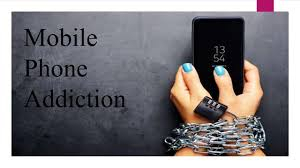

Mobile telephone, portable device for connecting to a telecommunications network in order to transmit and receive voice, video, or other data. Mobile phones typically connect to the public switched telephone network (PSTN) through one of two categories: cellular telephone systems or global satellite-based telephony.Phone addiction is the obsessive use of a smartphone. The behavioral addiction is often dubbed as “nomophobia,” or the fear of being without a mobile device. There are over 3.8 billion smartphone users in the world.
Designed By:©ravleen@2345